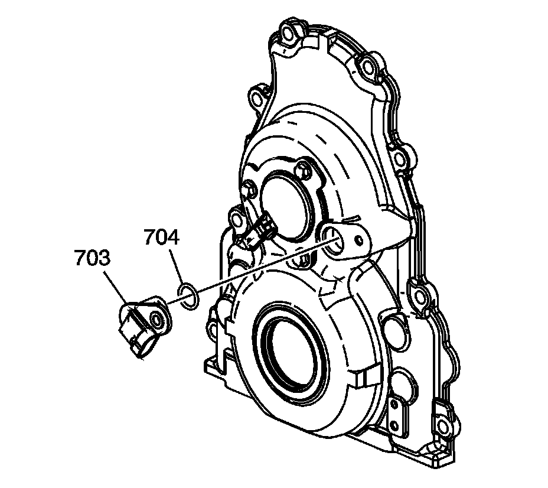

77. Engine Front Cover Installation
Engine Front Cover Installation (RPO LY6/L76/L92)
Tools Required
^ J 41476 Front and Rear Cover Alignment Tool
^ J 41480 Front and Rear Cover Alignment
Notice: Refer to Fastener Notice.
Important:
^ Do not use the crankshaft oil seal or the engine front cover gasket again.
^ Do not apply any type of sealant to the front cover gasket, unless specified.
^ The special tools in this procedure are used to properly align the engine front cover at the oil pan surface and to center the crankshaft front oil seal.
- All gasket surfaces should be free of oil or other foreign material during assembly.
The crankshaft front oil seal MUST be centered in relation to the crankshaft.
- The oil pan sealing surface at the front cover and engine block MUST be aligned within specifications.
- An improperly aligned front cover may cause premature front oil seal wear and/or engine assembly oil leaks.
Install the front cover gasket (503), front cover (502), and bolts (501).
1. Tighten the cover bolts finger tight. Do not overtighten.
Important: Start the tool-to-front cover bolts. Do not tighten the bolts at this time.
2. Install the J 41480.
Tighten the tool-to-engine block bolts to 25 N.m (18 lb ft).
Important: Align the tapered legs of the tool with the machined alignment surfaces on the front cover.
3. Install the J 41476.
4. Install the crankshaft balancer bolt.
1. Tighten the crankshaft balancer bolt by hand until snug. Do not overtighten.
2. Tighten the J 41480.
3. Tighten the engine front cover bolts to 25 N.m (18 lb ft).
5. Remove the tools.
6. Measure the oil pan surface flatness, front cover-to-engine block.
1. Place a straight edge across the engine block and front cover oil pan sealing surfaces.
Avoid contact with the portion of the gasket that protrudes into the oil pan surface.
2. Insert a feeler gage between the front cover and the straight edge tool. The cover must be flush with the oil pan surface or no greater than 0.5 mm (0.02 in) (a) below flush.
7. If the front cover-to-engine block oil pan surface alignment is not within specifications, repeat the cover alignment procedure.
8. If the correct front cover-to-engine block alignment cannot be obtained, replace the front cover.
9. Install the camshaft position (CMP) actuator magnet (752), gasket (753), and bolts (751).
Tighten the bolts to 12 N.m (106 lb in).

10. Install the CMP sensor (703) and O-ring (704).

11. Install the CMP sensor wire harness (737) and bolts (738).
Tighten the bolts to 12 N.m (106 lb in).